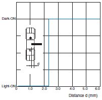
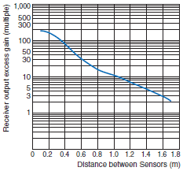
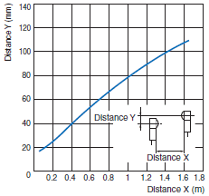
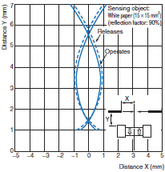
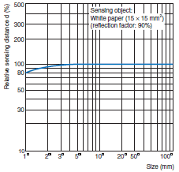

Building Automation
Industrial Automation
Power Automation & Safety


Bangladesh Distributor
Photomicro Sensors
These Optical Sensors provide a compact, low-cost method to detect workpieces. Many models are available, including Slot-type Sensors (through-beam) for non-modulated or modulated light, Reflective Sensors, and Sensors with separate emitters and receivers.
|
|
|
|
|
|
|
|
Further Information |
|
|
Troubleshooting |
Related Contents
- Photomicro Sensors

Interpreting Engineering Data
| Sensing Position Characteristics | Repeated Sensing Position Characteristics |
| Sample characteristics for the EE-SX77  | Sample characteristics for the EE-SX77 |
| ・ Indicates whether or not the Sensor responds with respect to sensing object edge position. (Design the application so that light will be completely interrupted.) | ・ Indicates the discrepancy in the edge position of the sensing object when the Sensor responds. It serves as a guide for the positioning accuracy of the sensing object. |
| Receiver Output Excess Gain vs. Sensing Distance Characteristics | Parallel Movement Characteristics |
| Sample characteristics for the EE-SPW311/411  | Sample characteristics for the EE-SPW311/411  |
| ・ Values shown are for the receiver output excess gain when the sensitivity is set to the maximum value. ・ The above example is for models with a rated sensing distance of 1m. The receiver output excess gain can be thought of as being approximately 10 times the rated sensing distance. | ・ Through-beam Sensors: Indicates the receiver's sensing limit position when the emitter position is fixed. ・ Retroreflective Sensor: Indicates the sensing limit position of the Retroreflector when the Sensor position is fixed. ・ When setting up multiple Through-beam Sensors, 1.5 times the area shown is necessary to prevent mutual interference. |
| Operating Range Characteristics | Sensing Distance vs. Object Area Characteristics |
| Sample characteristics for the EE-SPY311/411  | Sample characteristics for the EE-SPY[][][]  |
| ・ Indicates the starting sensing position when the standard sensing object is moved perpendicular to the optical axis. (These values apply to the standard sensing object. If the sensing object changes, the operating range and sensing distances also change.) | ・ Indicates the change in the sensing distance when the area of a white piece of paper with a reflection factor of 90% of the standard sensing object is increased. (The sensing distance will change with the reflection factor.) |